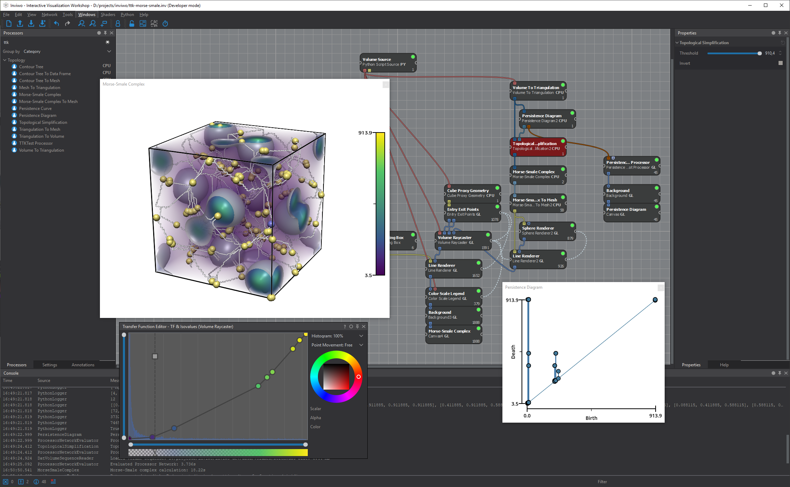

Online documentation:
· TTK Examples documentation
· Feature overview
- Bibtex entry
· TTK's user forum.
· Citing TTK
· Doxygen developer documentation
· TTK Technical report
- Presentation at IEEE VIS
2017 (video)
- Bibtex entry
· TTK-MPI Technical report
- Bibtex entry
Code examples:
·
Python example
·
VTK/C++ example
·
C++ only example
Usage documentation and online tutorials:
· Overview video webinar on the Applied Algebraic Topology Network YouTube channel.
· ParaView/Python online tutorial
· Tutorials at IEEE VIS (slides and videos)
· Python Video tutorial
· C++ Video tutorial
· C++ only Video tutorial
· Using TTK in-situ with Catalyst:
Online tutorial
-
Video tutorial
Contributor documentation:
· Extending TTK with a new module:
Online tutorial (computation of Betti numbers)
-
Video tutorial
· Guidelines for creating a new module
(TTK developer wiki)
· Contributing instructions
Extra useful links regarding third-party components can be
found there:
· VTK developer documentation
· ParaView plugin HowTo
· ParaView server plugin extra hints
Third-party projects using TTK
· cricket-topology - Topological analysis of cricket players' positional data, by Adhitya Kamakshidasan.
· inviwo - Free configurable visualizations for scientific data (TTK modules), by the Inviwo team.

· ParaView - Multi-platform data analysis and visualization application, by Kitware Inc..
· topo-vol - Topology-driven transfer function design for volume rendering, by Will Usher and Qi Wu.